💡 行前懶人包 💡 Quick Info
- 治安防竊：馬德里身為西班牙首都，太陽門廣場（Puerta del Sol）與格蘭大道（Gran Vía）等人潮密集區扒手極其猖獗，特別是在觀看街頭藝人表演或上下地鐵時，務必將包包背在胸前。 Pickpockets: As the capital, crowded areas like Puerta del Sol and Gran Vía are notorious for pickpockets. Keep your bag on your chest, especially when watching street performers or taking the metro.
- 極度延後的作息：西班牙人的作息「極度延後」，午餐通常下午 2 點才開始，晚餐則是晚上 9 點甚至 10 點才吃，行程安排與預訂餐廳時請務必留意！ Very Late Schedule: Spaniards run on a "delayed" schedule. Lunch peaks at 2 PM, and dinner often starts at 9 PM or 10 PM. Plan your meals and reservations accordingly!
- Renfe 訂票擋台灣 IP：西班牙國鐵 Renfe 不論是官方網站或 App 皆會嚴格屏蔽台灣 IP，若要在台灣預先訂票，務必開啟 VPN 跨區（如切換至歐洲 IP）才能正常開啟網頁與順利完成付款。 Renfe blocks Taiwan IPs: The Spanish railway Renfe (both website and App) strictly blocks IP addresses from Taiwan. To book tickets in advance from Taiwan, you MUST use a VPN (e.g., connect to a European server) to access the site and pay.
章節導覽Table of Contents
🛑 獨旅防雷與隱藏密技 🛑 Solo Travel Hacks & Hidden Tips
🎫 博物館免費時段神招Free Museum Hours Hack
馬德里被譽為藝術金三角！普拉多博物館（閉館前 2 小時）、蘇菲亞王妃藝術中心（平日閉館前 2 小時、週日特定時段）以及提森-博內米薩博物館（週一全天、週六夜間）都有免費開放時段。不過人潮極多，強烈建議事先在官網預約「0 元門票」確保能進場！ Madrid is an art triangle! The Prado (last 2 hrs), Reina Sofía (last 2 hrs on weekdays, specific times on Sun), and Thyssen-Bornemisza (all Mon, Sat nights) offer FREE hours. They get extremely crowded, so highly recommend booking the "€0 ticket" online in advance to guarantee entry!
🍻 點酒送小菜的獨旅省錢術Free Tapas Hack
在馬德里的傳統酒吧，有一項令人熱血沸騰的文化：「點飲料送免費小菜（Gratis Tapas）」。只要點一杯夏日紅酒(Tinto de verano)、啤酒（Caña）或蘋果酒(Sidra)，老闆就會端上一盤 Tapas。此外，在吧台「站著吃（Barra）」通常會比在外面露台「坐著吃（Terraza）」便宜許多！ Traditional Madrid bars have an exciting culture: "Free Tapas with Drinks (Gratis Tapas)". Order a Tinto de verano, beer (Caña), or cider (Sidra), and you get a plate of food. Also, eating standing at the bar (Barra) is usually much cheaper than sitting on the terrace (Terraza)!
🗺️ 必做體驗：馬德里 13 大絕美景點 🗺️ Must-Do: 13 Beautiful Spots in Madrid
作為西班牙的心臟，馬德里完美融合了波旁王朝的華麗宮殿、世界級的藝術館，以及生氣勃勃的現代廣場。以下為你盤點市區最經典的地標： As the heart of Spain, Madrid perfectly blends the magnificent palaces of the Bourbon dynasty, world-class art museums, and vibrant modern squares. Here are the most classic landmarks in the city:
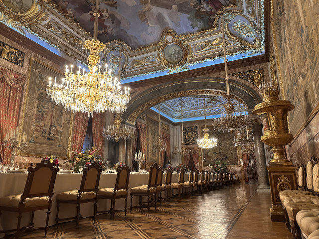
歷史建築Historic1. 馬德里王宮 (Palacio Real de Madrid)1. Royal Palace of Madrid
歐洲最大的皇宮之一，內部裝潢極盡奢華，展現了西班牙帝國昔日的輝煌。從國王廳到皇家軍械庫，每一處細節都令人嘆為觀止。 One of the largest royal palaces in Europe. Its luxurious interior showcases the former glory of the Spanish Empire. From the Throne Room to the Royal Armoury, every detail is breathtaking.
💭 我的感受：💭 Bryan's take: 不輸維也納美泉宮的豪華西班牙巴洛克宮殿，雄偉霸氣的廣場更是與其相互輝映！絕對秒殺你的相機空間！建議提前訂票。 A luxurious Spanish Baroque palace on par with Schönbrunn. The majestic square complements it perfectly! Will definitely fill up your camera storage! Pre-booking recommended.
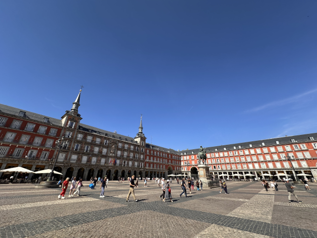
歷史建築 / 免費Historic / Free2. 主廣場 (Plaza Mayor)2. Plaza Mayor
馬德里的歷史核心廣場，四面被三層樓高的紅牆建築環繞，中央佇立著腓力三世騎馬雕像。 Madrid's historic core square, surrounded by three-story red-walled buildings, with the equestrian statue of King Philip III standing in the center.
💭 我的感受：💭 Bryan's take: 一座被美麗紅牆建築包圍的廣場。 A grand square surrounded by beautiful red-walled architecture.
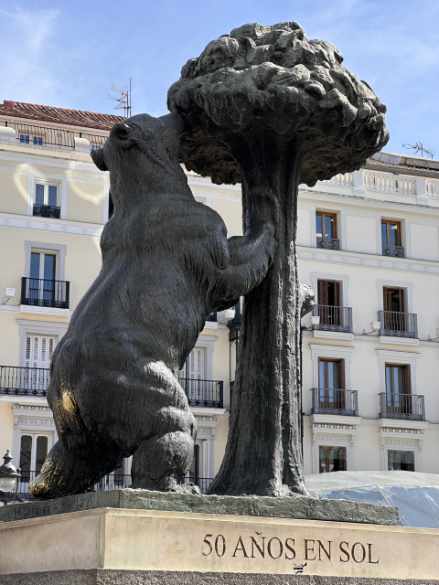
逛街行程 / 免費Shopping / Free3. 太陽門廣場 (Puerta del Sol)3. Puerta del Sol
西班牙公路網零公里標誌（Kilómetro Cero）與市標「熊與莓樹」雕像所在地，是馬德里最熱鬧的交會點。 Home to the "Kilometre Zero" mark of Spain's road network and the city's symbol, the "Bear and the Strawberry Tree" statue. It's the most bustling hub in Madrid.
💭 我的感受：💭 Bryan's take: 大家來這裡很像都只是打卡熊與莓樹。但這裡的舊郵政大樓等建築都很美唷！ Most people just come to snap the Bear and Strawberry Tree. But buildings here like the old Post Office are also beautiful!
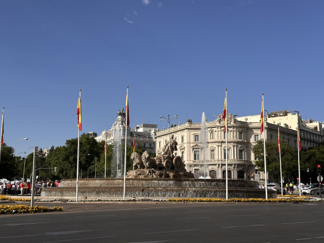
逛街行程 / 免費Shopping / Free4. 格蘭大道 (Gran Vía)4. Gran Vía
被稱為「西班牙的百老匯」，是馬德里最繁華的購物與劇院街。沿途的 20 世紀初折衷主義與裝飾藝術建築氣勢磅礴。 Known as "Spain's Broadway", it is Madrid's most bustling shopping and theater street. The early 20th-century eclectic and Art Deco buildings along the way are magnificent.
💭 我的感受：💭 Bryan's take: 從著名的西貝萊斯廣場一直到西班牙廣場，兩側的建築真的是一個比一個還爭奇鬥豔。就算不來買東西，光走在上面就是一大享受～ From Cibeles Square all the way to Plaza de España, the buildings on both sides outshine each other. Even if you don't shop, just walking here is a delight~
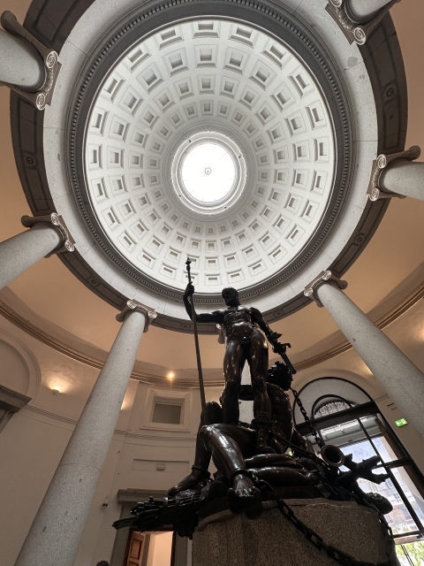
博物館Museum5. 普拉多博物館 (Museo del Prado)5. Prado Museum
與羅浮宮、大英博物館齊名的世界級藝術殿堂。收藏了委拉斯開茲《侍女》與哥雅《裸體的瑪哈》等西班牙皇室珍藏。 A world-class art museum on par with the Louvre. It houses Spanish royal collections like Velázquez's "Las Meninas" and Goya's "La maja desnuda".
💭 我的感受：💭 Bryan's take: 超多藏品，但留一整天一定看得完！語音導覽有分成不同長度，非常推薦租一台了解其背後的故事。個人覺得「人間樂園」特別有趣！ Tons of art, but a full day is enough! Audio guides come in different lengths, highly recommend renting one. I found "The Garden of Earthly Delights" especially fascinating!
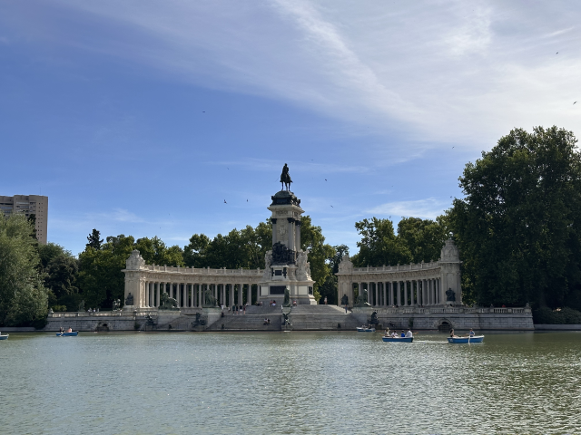
自然景觀 / 免費Nature / Free6. 麗池公園 (Parque de El Retiro)6. El Retiro Park
馬德里的綠色肺腑，曾是西班牙王室專屬的避暑庭園。公園內有優美的人工湖可以划船，以及絕美的水晶宮（Palacio de Cristal）溫室建築。 Madrid's green lung, once a summer garden for the Spanish royals. Features a beautiful artificial lake for rowing and the stunning glass Palacio de Cristal.
💭 我的感受：💭 Bryan's take: 公園內寬敞且設計成不同主題區域，整天都非常適合漫步探索。若要做一些有氧運動也非常適合唷！ Spacious and designed with different themes. Great for strolling all day. Also perfect if you want to do some cardio!
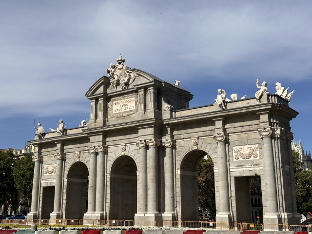
歷史建築 / 免費Historic / Free7. 阿爾卡拉門 (Puerta de Alcalá)7. Puerta de Alcalá
佇立於獨立廣場上的新古典主義城門，歷史甚至比巴黎凱旋門還要悠久，是馬德里通往舊時阿爾卡拉城的重要門戶。 A neoclassical gate standing on Independence Square. Older than the Arc de Triomphe in Paris, it was the main gateway to the old town of Alcalá.
💭 我的感受：💭 Bryan's take: 這座門我其實覺得很普通，但因為出現在各種紀念品上，若好奇到底在哪裡，就是在這裡！ I found this gate quite ordinary, but since it appears on so many souvenirs, if you're wondering where it is, it's right here!
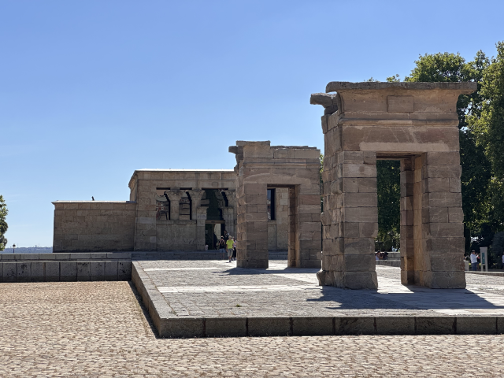
歷史建築 / 免費Historic / Free8. 德波神廟 (Templo de Debod)8. Temple of Debod
這是埃及政府為了感謝西班牙協助拯救阿布辛貝神廟而贈送的真正古埃及神廟。一磚一瓦運到馬德里重建，是觀賞市區夕陽的絕佳秘境。 An authentic ancient Egyptian temple gifted to Spain to thank them for helping save the Abu Simbel temples. Rebuilt brick by brick in Madrid, it's a great spot to watch the sunset.
💭 我的感受：💭 Bryan's take: 埃及以外唯一一座露天埃及神廟。雖然免費，但一定要事前預訂啊！由於有極嚴格的人數限制，甚至比聖家堂還難訂到！但光在外面走走拍拍也能稍微解想去埃及的心>< The only open-air Egyptian temple outside Egypt. Free, but MUST be pre-booked! Due to strict capacity, it's harder to book than Sagrada Familia! Still nice to just walk around outside though.
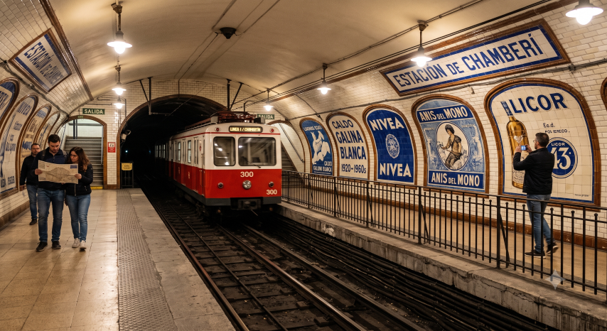
博物館 / 免費Museum / Free9. 簡貝里地鐵博物館 (Estación Museo Chamberí)9. Chamberí Station Museum
彷彿時間靜止的「幽靈車站」。這座 1919 年啟用的地鐵站在 1966 年關閉後，被原汁原味地保留下來，復古的磁磚廣告與售票亭充滿懷舊魅力。 A "ghost station" where time stands still. Opened in 1919 and closed in 1966, this metro station was preserved exactly as it was. The vintage tile ads and ticket booths are full of nostalgic charm.
💭 我的感受：💭 Bryan's take: 這是我搭地鐵經過時無意間注意到的。這也是一間免費的博物館唷！可惜也是一個得事先訂票的概念>< I noticed this by accident while passing by on the metro. It's a free museum too! Unfortunately, it also requires booking in advance ><
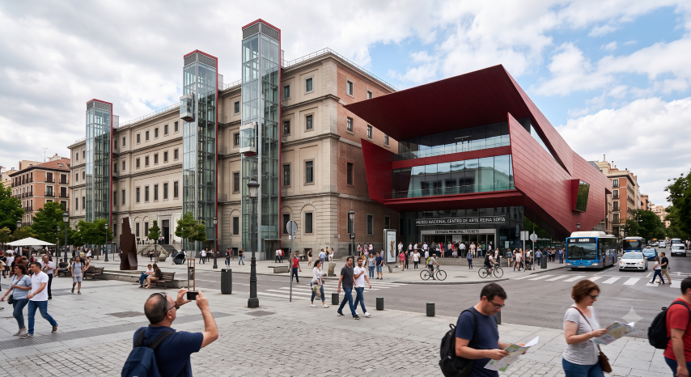
博物館Museum10. 國立蘇菲亞王妃藝術中心 (Museo Nacional Centro de Arte Reina Sofía)10. Reina Sofía Museum
藝術金三角之一，專注於 20 世紀的當代藝術。館內的鎮館之寶是畢卡索震撼人心的反戰巨作《格爾尼卡》（Guernica），同時也收藏了大量達利與米羅的作品。 One of the Golden Triangle of Art, focusing on 20th-century contemporary art. Its crown jewel is Picasso's shocking anti-war masterpiece "Guernica", alongside many works by Dalí and Miró.
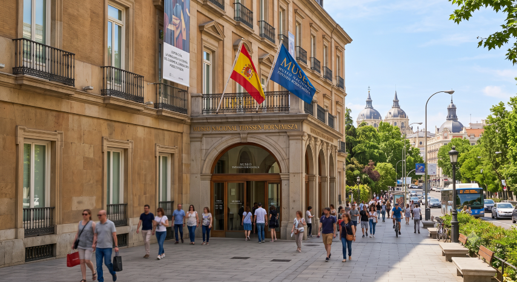
博物館Museum11. 提森-博內米薩國家博物館 (Thyssen-Bornemisza National Museum)11. Thyssen-Bornemisza National Museum
原為私人收藏，館藏豐富度極為驚人。從文藝復興、印象派到美國普普藝術，在這裡你可以看見梵谷、林布蘭與達利的畫作，完美填補了另外兩家美術館的時代空缺。 Originally a private collection, its richness is astonishing. From the Renaissance and Impressionism to American Pop Art, you can see works by Van Gogh, Rembrandt, and Dalí, perfectly bridging the historical gaps of the other two museums.
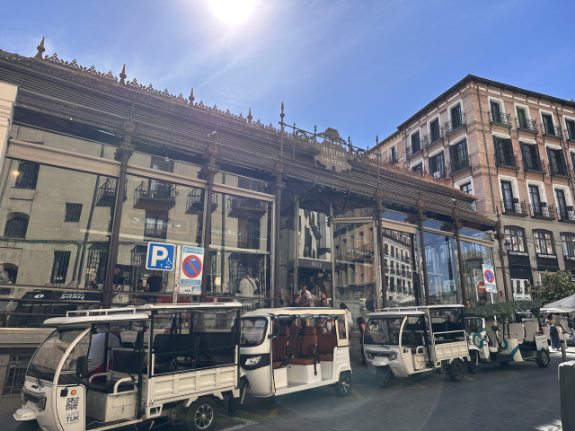
逛街行程 / 飲食餐廳Shopping / Dining12. 聖米格爾市場 (Mercado de San Miguel)12. Mercado de San Miguel
百年鋼鐵玻璃建築的精品市場！內部匯集了全西班牙的高級食材與精緻 Tapas，從生蠔、伊比利火腿到各式桑格利亞酒，是視覺與味覺的雙重享受。 A gourmet market in a century-old iron and glass building! It gathers premium ingredients and exquisite Tapas from all over Spain. From oysters and Iberian ham to various Sangrias, it's a visual and culinary delight.
💭 我的感受：💭 Bryan's take: 一座裝潢優美的我個人覺得有點貴的老市場～～ A beautifully decorated but, in my opinion, slightly pricey old market~~
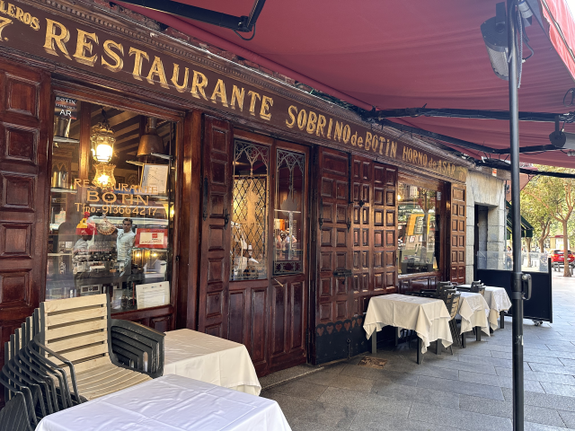
飲食餐廳Dining13. 波丁餐廳 (Restaurante Botín)13. Restaurante Botín
擁有金氏世界紀錄認證「全世界最古老的餐廳」（1725年開業），海明威也曾是座上賓。招牌菜是柴火烤乳豬（Cochinillo Asado）。 Guinness World Record holder for the "Oldest Restaurant in the World" (opened in 1725). Hemingway was a frequent guest. The signature dish is wood-fired roast suckling pig (Cochinillo Asado).
💭 我的感受：💭 Bryan's take: 沒機會進去吃，絕對要好幾個月前訂位😂但我聽一個當地的台灣藍帶廚師說一般般(? Didn't get a chance to eat inside, you definitely need to book months in advance 😂 But I heard from a local Taiwanese Le Cordon Bleu chef that it's just average (?
🏔️ 馬德里近郊一日遊：世界遺產古城與懶人玩法 🏔️ Madrid Day Tours: Heritage Cities & Easy Trips
馬德里位處伊比利亞半島中心，放射狀的高鐵網讓它成為周遊西班牙各大古城的完美基地。只要 1 小時車程，就能穿越回中世紀： Located in the center of the Iberian Peninsula, Madrid's radial high-speed rail network makes it a perfect base to tour Spain's ancient cities. A 1-hour ride transports you back to the Middle Ages:
📍 自行前往推薦 (搭乘高鐵或近郊鐵路) DIY Travel (High-Speed or Commuter Trains)
托雷多 (Toledo)Toledo
⏱️ ~35min中世紀的三文化之都，整座被太加斯河環繞的山城就是世界遺產。 The medieval City of Three Cultures. The entire hill city surrounded by the Tagus River is a World Heritage site.
塞哥維亞 (Segovia)Segovia
⏱️ ~1h 10m擁有震撼的兩千年羅馬水道橋與迪士尼白雪公主城堡原型。 Features a mind-blowing 2000-year-old Roman aqueduct and the inspiration for Disney's Snow White Castle.
埃斯科里亞爾修道院El Escorial
⏱️ ~1h 20m西班牙黃金時代的權力中心與國王陵寢，散發出冷峻的皇室威嚴。 The center of power and royal mausoleum during the Spanish Golden Age, exuding austere royal majesty.
阿蘭胡埃斯 (Aranjuez)Aranjuez
⏱️ ~40min西班牙皇室的春季行宮，擁有極為優美的法式庭園景觀。 The spring palace of the Spanish royals, featuring exquisitely beautiful French garden landscapes.
阿爾卡拉·德·埃納雷斯Alcalá de Henares
⏱️ ~55min世界名著《唐吉訶德》作者塞萬提斯的故鄉，充滿文藝氣息的大學城。 Hometown of Cervantes, author of "Don Quixote". An artistic university town.
昆卡 (Cuenca)Cuenca
⏱️ ~1.5hr建築在峽谷懸崖邊緣的魔幻古城。地標「懸空之屋」視覺效果極度震撼。 A magical ancient city built on the edge of a gorge cliff. The landmark "Hanging Houses" are visually stunning.
阿維拉 (Ávila)Ávila
⏱️ ~1.5hr擁有全歐洲保存最完整、氣勢最驚人的中世紀古城牆，彷彿走進防禦堡壘。 Features Europe's best-preserved and most imposing medieval city walls. Feels like walking into a fortress.
薩拉曼卡 (Salamanca)Salamanca
⏱️ ~1h 50m擁有全西班牙最古老大學的「金色之城」。砂岩建築在陽光下閃耀，是建築迷聖地。 The "Golden City" with Spain's oldest university. Sandstone buildings shine in the sun, a mecca for architecture lovers.
🚐 懶人玩法：馬德里出發直達一日團 Lazy Way: Direct Day Tours from Madrid
不想自己查高鐵班次、或是煩惱高鐵站到老城區的轉乘公車？直接預訂馬德里市區出發的一日遊專車是最省時省力的獨旅聰明對策。 Don't want to check AVE schedules or worry about connecting buses from the station to the old town? Booking a guided day tour directly from Madrid is the smartest time-saving choice for solo travelers.
托雷多古城探索一日遊Toledo Ancient City Day Tour
從塞薩洛尼基出發比從雅典近很多，不會坐車做到屁股疼～(使用者原句保留) Much closer from Thessaloniki than Athens, won't make your butt hurt from the ride~ (Original quote preserved)
塞哥維亞水道橋與城堡巡禮Segovia Aqueduct & Castle Tour
唯一能輕鬆玩兩座馬其頓都城的獨旅方式！缺點是逛博物館的時間不多><(使用者原句保留) The only easy way to solo travel two Macedonian capitals! Downside is not much time for museums >< (Original quote preserved)
埃斯科里亞爾修道院專車半日遊El Escorial Half Day Tour
若你是基督徒或是世界遺產迷，這個絕對不能錯過！ If you are a Christian or a World Heritage fan, this is absolutely unmissable!
薩拉曼卡 & 阿維拉雙城一日遊Salamanca & Ávila 2-City Tour
昆卡懸空之屋專車一日遊Cuenca Hanging Houses Tour
阿爾卡拉·德·埃納雷斯半日遊Alcalá de Henares Half Day
🎉 年度慶典：三大必訪狂歡時刻 🎉 Annual Festivals: 3 Must-Visit Carnivals
感受西班牙最道地的節慶熱情 Feel the Most Authentic Spanish Passion
馬德里的節慶完美展現了西班牙人「活在當下」的性格。無論是穿著傳統服飾跳舞的春季祭典，或是徹夜狂歡的夏日街頭派對，都能讓你深度體驗伊比利亞的文化魅力。 Madrid's festivals perfectly showcase the Spanish "live in the moment" attitude. Whether it's spring festivals with traditional dancing or summer street parties raging all night, you'll deeply experience the Iberian charm.
馬德里最重要的守護神節日！當地人會穿著傳統服飾（Chulapos），聚集在街頭大跳傳統舞蹈 Chotis，並享用名為 Rosquillas 的甜甜圈，整座城市氣氛歡騰。 Madrid's most important patron saint festival! Locals wear traditional costumes (Chulapos), gather to dance the traditional Chotis, and eat Rosquillas doughnuts. The whole city is jubilant.
夏日馬德里最具代表性的街頭露天夜會（Verbena）。活動集中在最具波西米亞風情的 La Latina 區，大家喝著啤酒、吃 Tapas 徹夜狂歡。 Madrid's most iconic summer street night party (Verbena). Centered in the bohemian La Latina neighborhood, everyone drinks beer, eats Tapas, and parties all night.
西班牙的聖誕節高潮不在 12 月，而是 1 月的東方三王節！馬德里市中心會舉辦超級盛大的花車遊行，沿途狂撒糖果，是冬季旅遊不可錯過的時刻。 The climax of Christmas in Spain isn't in December, but Epiphany in January! Central Madrid hosts a massive float parade, tossing candies along the route. Unmissable for winter travel.
🚆 交通全攻略：機場聯外與市區移動建議 🚆 Transport Guide: Airport & City Transit
📍 從馬德里巴拉哈斯機場 (MAD) 出發 From Adolfo Suárez Madrid–Barajas Airport (MAD)
機場快線巴士 (Exprés 203)Airport Express Bus 203
24H直達市區24H Direct to City🛫 起點🛫 Start機場 T1 / T2 / T3 / T4Terminals T1/T2/T3/T4
🏁 終點🏁 EndAtocha 火車站 (夜間僅至 Cibeles)Atocha Station (Night: Cibeles)
💶 價格💶 Price單程 5€Single 5€
地鐵 8 號線 (粉紅線)Metro Line 8 (Pink)
轉乘最方便Best for Transfers🛫 起點🛫 Start機場 T1-T2-T3 站 / T4 站Airport T1-T2-T3 / T4
🏁 終點🏁 EndNuevos Ministerios (轉乘樞紐)Nuevos Ministerios (Hub)
💶 價格💶 Price單程約 4.5€ - 5€ (含機場附加費)~4.5€ - 5€ (incl. Airport supp.)
近郊鐵路 (Cercanías C1)Commuter Rail (Cercanías C1)
高鐵轉乘免費Free with AVE🛫 起點🛫 Start僅限機場 T4 航廈Terminal 4 ONLY
🏁 終點🏁 EndChamartín / Nuevos Ministerios / Atocha
💶 價格💶 Price單程 2.6€Single 2.6€
市區一般公車 (Bus 200)City Bus 200
隱藏最便宜Hidden Cheapest🛫 起點🛫 Start機場 T1 / T2 / T3 / T4Terminals T1/T2/T3/T4
🏁 終點🏁 EndAvenida de América 轉運站Avenida de América Hub
💶 價格💶 Price單程僅 1.5€Only 1.5€
📍 跨區火車與長途巴士總站快查Intercity Trains & Bus Terminals
🚆 火車站 (Renfe / 跨國)🚆 Train Stations (Renfe / Int'l)
- 阿托查火車站 (Atocha)Atocha Station 路線多往西班牙南部、東部（如塞維亞、托雷多）。 Routes to South & East Spain (e.g., Seville, Toledo). 📍 Google Maps
- 查馬丁火車站 (Chamartín)Chamartín Station 路線多往西班牙北部、西北部以及法國（如塞哥維亞、薩拉曼卡）。 Routes to North/NW Spain & France (e.g., Segovia, Salamanca). 📍 Google Maps
🚌 巴士轉運站 (ALSA 等)🚌 Bus Terminals (ALSA, etc.)
- 馬德里南站 (Estación Sur)Estación Sur (South Station) 路線多為國際線或往西班牙南部、東部與西部。 Mostly Int'l routes or South/East/West Spain. 📍 Google Maps
- 美洲大道轉運站 (Avenida de América)Avenida de América 路線多為往西班牙北部、東北部。 Mostly routes to North & NE Spain. 📍 Google Maps
📍 市內交通與購票City Transit & Tickets
馬德里交通局 (CRTM)Madrid Transport (CRTM)
市區包含地鐵 (Metro)、公車 (EMT)、輕軌 (ML) 與近郊鐵路 (Cercanías)。
⚠️ 注意：近郊火車 (Renfe營運) 與地鐵 (CRTM營運) 票券不互通，請勿買錯！
Includes Metro, Bus (EMT), Light Rail (ML) and Commuter Rail (Cercanías).
⚠️ Note: Tickets for Cercanías (Renfe) and Metro (CRTM) are NOT interchangeable!
- 單程票 (地鐵/公車)：Single (Metro/Bus): 1.5€
- 近郊火車單程：Single (Cercanías): 1.7€
- 10次票 (TTP卡)：10-trip TTP Card: 7.3€ (近郊火車為Cercanías is 10€)
- 觀光日票：Tourist Day Pass: 10.3€ 起 (可搭近郊鐵路、包含往返機場) From 10.3€ (includes Cercanías & Airport return)
藝術大道通行證 (Paseo del Arte)Paseo del Arte Pass
如果你打算參觀馬德里最具代表性的三大美術館，強烈建議購買這張套票！可以幫你省下門票費用與排隊購票時間。
亮點：一次免費參觀普拉多、蘇菲亞王妃、提森-博內米薩三大博物館各一次。
價格：32.8€
If you plan to visit Madrid's top 3 art museums, this pass is highly recommended! Saves money and skipping ticket lines.
Highlights: One free entry to Prado, Reina Sofía, and Thyssen-Bornemisza.
Price: 32.8€
🛏️ 住宿建議：精選安全且高性價比的獨旅避風港 🛏️ Accommodation: Safe & High-Value Solo Stays
| 🛏️ 住宿飯店 / 青旅🛏️ Hostel/Hotel | 🔗 預訂連結🔗 Booking | 💰 平均房價參考💰 Est. Price | ⭐ 旅客評分⭐ Rating | 💡 站長為何推薦💡 Why Recommend |
|---|---|---|---|---|
| The Central House Madrid Lavapiés 📍 Google Maps | EUR 35 - 60 / 晚night |
約 9.1 / 10 頂樓露台，高質感設計 ~ 9.1 / 10 Rooftop terrace, great design |
位於多元文化的 Lavapiés 區，設施極新，公共空間與頂樓露台非常舒適，床位隱私性佳且環保。 Located in multicultural Lavapiés. Very new facilities. The common areas and rooftop terrace are super comfy, eco-friendly with private beds. | |
| Way Hostel Madrid 📍 Google Maps | EUR 30 - 50 / 晚night |
約 8.9 / 10 活動豐富，氣氛溫馨 ~ 8.9 / 10 Great events, cozy vibe |
以舉辦各種獨旅社交活動聞名（如免費 Walking Tour、Churros 團），員工熱情，適合想交朋友的背包客。 Famous for organizing solo traveler social events (free walking tours, churros runs). Warm staff, great for meeting people. | |
| 2060 The Newton Hostel 📍 Google Maps | EUR 35 - 55 / 晚night |
約 9.0 / 10 頂樓按摩浴缸，設施豪華 ~ 9.0 / 10 Rooftop Jacuzzi, luxury feel |
有超浮誇的頂樓 Jacuzzi 按摩浴缸，床位空間大，CP 值爆表。名字源自牛頓預言的世界末日，主張「活在當下」。 Has an extravagant rooftop Jacuzzi. Spacious beds, amazing CP value. Named after Newton's predicted end of the world, promoting "live in the moment". | |
| Cats Hostel Madrid Sol 📍 Google Maps | EUR 25 - 45 / 晚night |
約 8.5 / 10 派對屬性，絕美中庭 ~ 8.5 / 10 Party vibe, beautiful patio |
馬德里著名的派對青旅！內部有一個絕美的安達盧西亞摩爾風格中庭，如果你喜歡夜生活與交友，選這裡準沒錯。 Famous party hostel in Madrid! Features a stunning Moorish Andalusian courtyard. If you love nightlife and mingling, this is the place. | |
| The Loft House Madrid 📍 Google Maps | EUR 40 - 70 / 晚night |
約 8.6 / 10 溫馨公寓風，安靜舒適 ~ 8.6 / 10 Cozy apartment style, quiet |
偏向溫馨民宿風格的青旅，給人像家一樣的舒適感。非常安靜且乾淨，適合想好好休息的獨旅者。 A hostel with a cozy guesthouse vibe, feels like home. Very quiet and clean, perfect for solo travelers who want a good rest. |
🍝 在地美食指南：伊比利亞的舌尖狂歡 🍝 Local Cuisine: Iberian Flavor Feast
🍽️ 必吃美食Must-Eat Foods
馬德里匯集了全西班牙各地的風味精華，不管是街頭站著吃的下酒菜還是暖胃濃湯都令人垂涎： Madrid gathers the essence of flavors from all over Spain. Whether it's standing street tapas or warming hearty soups, it's mouthwatering:
馬德里名產「魷魚三明治」！將酥脆的現炸魷魚圈豪邁夾入法式長棍麵包，主廣場周邊每間酒吧幾乎都在賣。 Madrid's famous "squid sandwich"! Crispy fried calamari rings generously stuffed into a baguette. Almost every bar around Plaza Mayor sells it.
「馬德里燉肉/鷹嘴豆燉肉湯」是冬天極致的靈魂料理。由鷹嘴豆、蔬菜、豬肉香腸慢燉而成，極富飽足感。 "Madrid Stew / Chickpea Stew" is the ultimate winter soul food. Slow-cooked with chickpeas, veggies, and pork sausage. Very filling.
馬德里燉牛肚。用牛肚加入西班牙紅椒粉、臘腸與血腸長時間燉煮，香辣濃郁極為下酒。 Beef tripe slow-cooked with Spanish paprika, chorizo, and blood sausage. Spicy, rich, and perfect with alcohol.
「辣味炸馬鈴薯」是 Tapas 經典。將馬鈴薯炸至金黃酥脆，淋上微辣番茄醬與蒜味蛋黃醬，簡單卻讓人停不下來。 "Spicy Fried Potatoes", a Tapas classic. Golden crispy potato cubes drizzled with slightly spicy tomato sauce and garlic aioli. Simple but addictive.
西班牙油條佐熱巧克力！熱騰騰的現炸吉拿棒沾滿極為濃稠、像布丁一樣的熱巧克力，罪惡又幸福。 Spanish churros with hot chocolate! Hot, freshly fried churros dipped in extremely thick, pudding-like hot chocolate. Sinful and blissful.
西班牙版法式吐司。浸泡過牛奶或酒的麵包沾蛋液油炸，撒上大量糖粉或蜂蜜，如今許多餐廳都有供應。 Spanish French toast. Bread soaked in milk or wine, dipped in egg and fried, sprinkled with sugar or honey. Widely available in restaurants now.
🎒 獨旅實戰：友好餐廳與平價清單 Solo Guide: Friendly & Budget Restaurants
一個人吃飯不知道該去哪？想體驗當地小酌風情又怕破產？以下 5 間馬德里名店絕對是獨旅好朋友： Don't know where to eat alone? Want to experience local drinking culture without going broke? These 5 Madrid spots are a solo traveler's best friend:
| 🍴 餐廳名稱🍴 Restaurant Name | 💰 價格水平💰 Price Level | 📍 交通位置📍 Location | 💡 站長推薦理由💡 Why Recommend |
|---|---|---|---|
| 100 Montaditos 連鎖店Chain Store 📍 在地圖開啟Open in Maps | 極低價位Very Low | 市區各地皆有分店Branches all over city |
西班牙國民連鎖百元店！提供超過 100 種口味的小麵包三明治，週三與週日還有瘋狂優惠，獨旅省錢神店，哪家都便宜好吃。 Spain's national budget chain! Over 100 flavors of mini-sandwiches. Crazy promos on Weds and Suns. A budget godsend, cheap and tasty everywhere. |
| El Tigre Sidra Bar 📍 在地圖開啟Open in Maps | 極低價位Very Low |
Chueca 區 (近 Gran Vía)Area (near Gran Vía)
|
馬德里最著名的 Tapas 狂店！在這裡只要點一杯幾歐元的啤酒或蘋果酒，老闆就會瘋狂送上一大盤堆如小山的 Tapas，氣氛熱鬧爆棚。 Madrid's most famous crazy Tapas bar! Order a few-euro beer or cider, and the owner serves a mountain of free Tapas. Extremely lively atmosphere. |
| TKO Tacos 連鎖店Chain Store 📍 在地圖開啟Open in Maps | 低價位Low | 市區多家分店Multiple city branches |
如果在西班牙吃膩了生火腿與燉飯想換口味，這家平價又道地的墨西哥塔可連鎖店是絕佳選擇，單人點餐輕鬆且美味無負擔，哪家都便宜好吃。 If tired of jamón and paella, this authentic budget Mexican taco chain is great. Easy solo ordering, light, cheap, and delicious anywhere. |
|
火腿博物館 (Museo del Jamón) Museo del Jamón 📍 在地圖開啟Open in Maps |
極低價位Very Low | 太陽門廣場等多處Puerta del Sol & others |
這不是真正的博物館，而是連鎖傳統火腿酒吧！滿牆的伊比利豬火腿極具視覺震撼。低價的火腿麵包配站著喝的生啤酒，完美融入當地草根日常。 Not a real museum, but a chain of traditional ham bars! Walls covered in Iberian ham are visually stunning. Cheap ham sandwiches and standing draft beers—a perfect local grassroots experience. |
| Honest Greens 連鎖店Chain Store 📍 在地圖開啟Open in Maps | 中等價位Mid-Range | 市區多家連鎖店Multiple city branches |
歐洲超紅的健康餐盒店。裝潢極具木質調質感，主打有機原型食物，餐點美味且營養均衡。單人拿著托盤找座位極度友善無壓力。 Super popular European healthy bowl shop. Great wooden aesthetic, focuses on organic whole foods, delicious and balanced. Extremely friendly and stress-free to grab a tray and sit alone. |
🇪🇸 西班牙獨旅生存避雷箱 Spain Survival Box
作息：「極度延後」的生活作息Schedule: "Extremely Delayed"
西班牙人的吃飯與商店營業時間跟亞洲完全脫節！午餐尖峰是下午 2 點到 4 點，晚餐更是到晚上 8 點半後才開始熱鬧。許多知名餐廳晚上 8 點前是不開伙的。 Spanish dining times are completely detached from standard hours! Lunch peaks from 2 to 4 PM, and dinner only gets lively after 8:30 PM. Many famous restaurants won't even open their kitchens before 8 PM.
獨旅時可以在下午 5-7 點先去吃點 Tapas 墊胃，適應「一天吃五餐」的西班牙生活奏調。 When solo, grab some Tapas around 5-7 PM to tie you over. Adapt to the Spanish "5 meals a day" rhythm.
交通：高速鐵路車站位置陷阱Transit: AVE Station Traps
如前往塞哥維亞（Segovia Guiomar）或昆卡（Fernando Zóbel）等世界遺產，搭乘 AVE 高鐵雖然極快，但這些新落成的高鐵站通常遠在荒郊野外，離老城區仍有一大段距離。 When heading to heritage sites like Segovia or Cuenca, the AVE high-speed train is fast, but these new AVE stations are often in the middle of nowhere, quite far from the old town centers.
在排定一日遊火車時刻時，務必考慮抵達高鐵站後「轉乘市區接駁公車」的時間，千萬別抓太緊而錯過回程高鐵。 When scheduling day trips, always factor in the time needed for "city connecting buses" after arriving at the AVE station. Don't cut it too close for your return trip!
飲食：獨特可省錢的酒吧飲食文化Dining: Budget Bar Culture
西班牙酒吧有著送免費小菜（Gratis Tapas）的熱情文化，且在許多店家「站著吃（Barra）」會比坐在戶外露台（Terraza）結帳更便宜。 Spanish bars have a welcoming culture of Free Tapas (Gratis Tapas). Also, eating standing at the bar (Barra) is often cheaper than sitting on the outdoor terrace (Terraza).
身為獨旅者，勇敢地走到吧台點一杯 Cerveza（啤酒），靠著吧台站著吃 Tapas 是最不會被當作盤子、也最接地氣的享受方式！ As a solo traveler, bravely walk up to the bar, order a Cerveza, and eat Tapas standing up. It's the most authentic way to enjoy without being ripped off!

Bryan | Europe Solo Guide
「獨旅不是孤單，而是給自己一場完整的自由。」 "Solo travel is not about being lonely; it's about giving yourself complete freedom."
熱愛穿梭在歐洲老城區的石板路上與壯麗群山間。目前已獨自走訪 41 個歐洲國家，致力於將複雜的交通、住宿與隱藏景點，轉化為有溫度的獨旅攻略。希望這篇文章能幫你省下找資料的時間，把精力留給旅途中的美好。 I love wandering through cobblestone alleys of European old towns and majestic mountains. Having visited 41 European countries solo, I aim to transform complex transit, lodging, and hidden gems into warm solo guides. I hope this article saves you time so you can spend your energy on the beauty of the journey.